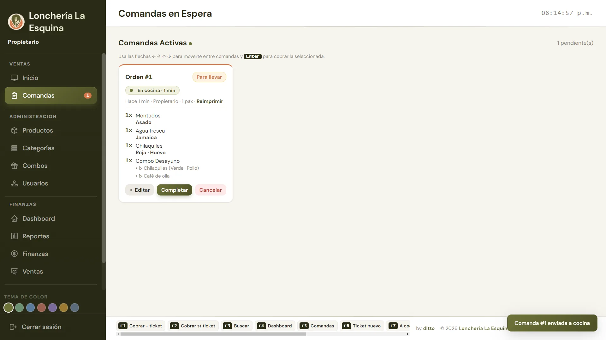
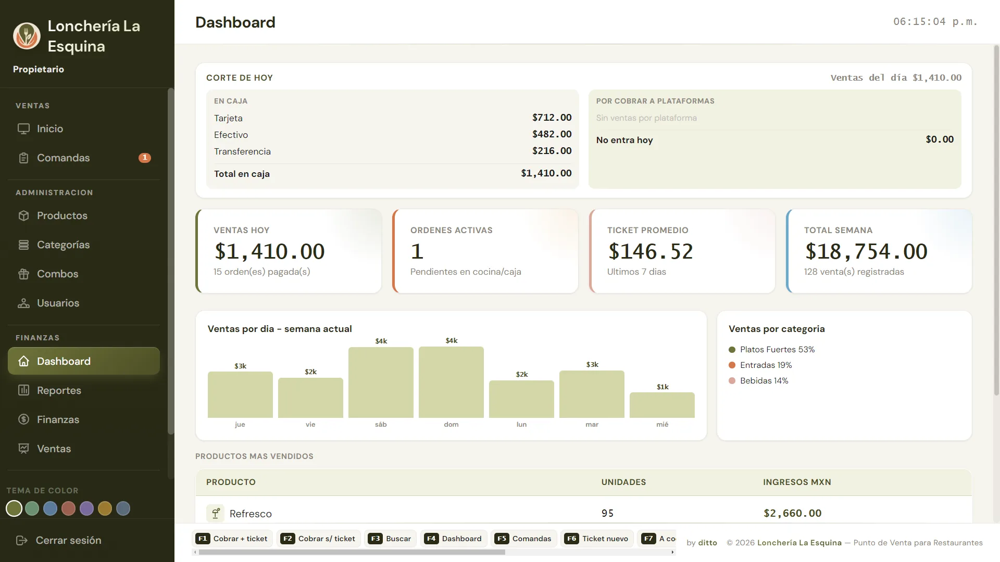

El menú a la izquierda, el ticket siempre a la vista.
Toca el producto y elige su variante: guiso, salsa, sabor o proteína, con su precio extra si lo tiene. Busca escribiendo, abre varios tickets en pestañas y deja notas para cocina.
- Variantes con cantidad por opción
- Varios tickets abiertos a la vez
- Atajos de teclado F1–F12 y flechas

Combos donde el cliente elige.
Arma un “Combo Desayuno” con un plato fuerte a elegir —montados o chilaquiles— y al venderlo FoodPoint despliega las variantes de lo que el cliente escogió. Lo fijo va solo.
- Grupos a elegir con una o varias piezas
- Armador visual: tocas y se agrega
- Ves cuánto ahorra el cliente contra comprar por separado


Comanda a cocina, cobro en dos pasos.
Comedor o para llevar, mesa y comensales: la comanda se imprime sola en la cocina y aparece en el monitor de cocina con su tiempo. Al cobrar eliges efectivo, tarjeta, transferencia, Uber Eats o DiDi, o divides el total. El cambio se calcula solo.
- Impresoras térmicas USB o de red: comanda, adicionales y cancelaciones
- Monitor de cocina en una segunda pantalla o tablet, con aviso de “listo” en caja
- Plataformas de reparto separadas del corte de caja
- Las ventas no se borran: se cancelan y queda registro
- Ticket con tu logo, impreso o sin imprimir


Sabes cuánto vendiste antes de cerrar la cortina.
Dashboard con el corte de hoy, ticket promedio y lo más vendido. Reportes por día, semana o mes, por categoría, producto y hasta por variante, con ganancia y margen.
- Corte de caja: lo que hay en caja y lo que falta por cobrar a plataformas
- Variantes más vendidas (¿asado o deshebrada?)
- Exporta a Excel (CSV)
